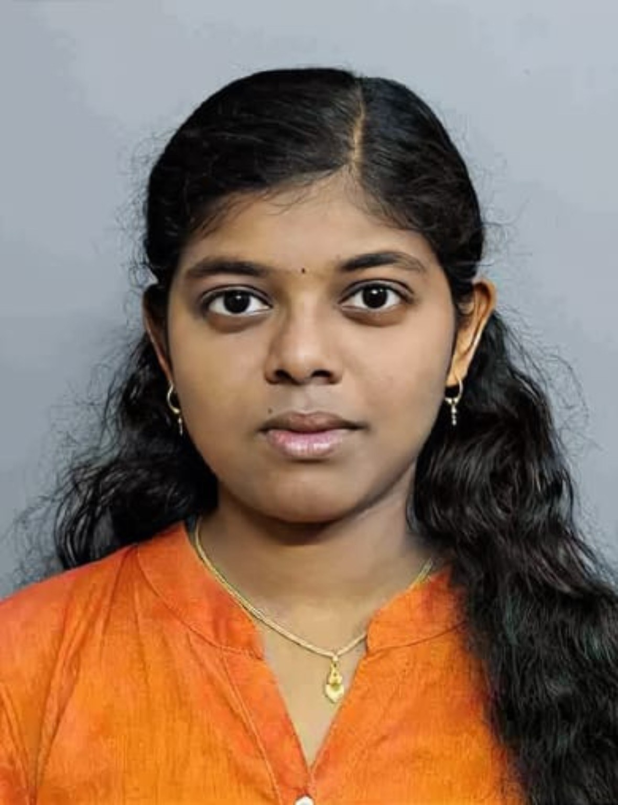

Web development
Building and styling responsive interfaces and adding client-side behavior.
I explore the intersection of software development, intelligent systems, and meaningful user experiences. Currently learning Python Full Stack Development while building on my experience in web technologies and machine learning.

A little about my background, interests, and what motivates me.
I'm an Artificial Intelligence & Data Science undergraduate at Rohini College of Engineering and Technology, interested in building practical software and exploring how technology can solve real problems.
My academic work includes AI-assisted healthcare monitoring and machine learning classification. Alongside these projects, I've studied HTML, CSS, JavaScript, Python, SQL, and software development fundamentals. I'm continuing to expand my skills through Python Full Stack training.
I'm interested in entry-level opportunities across software engineering, web development, and AI-related roles.
Technologies I have learned or used through academic projects, coursework, and training.
Building and styling responsive interfaces and adding client-side behavior.
Writing logic, understanding core programming concepts, and solving problems.
Working with relational data and fundamental database queries.
Applying data preprocessing, classification, and model evaluation concepts.
Tools used for writing, organizing, and collaborating on software.
Combining user-focused design with core computing concepts.
A closer look at academic work that brings together software, data, and real-world problems. Project demos and source-code links can be added when available.
Explores how sensor-based patient monitoring and machine learning can help identify potential emergency conditions and support faster response.
A classification-focused project using medical diagnostic data to distinguish between benign and malignant tumor cases.
A responsive, accessible website built with HTML, CSS and JavaScript to present projects, education, and experience in a recruiter-friendly format.
You can publish this portfolio from your GitHub repository.
Experiences that have shaped my technical interests and professional development.
Trinity Technology · Kanyakumari / Nagercoil
Gained exposure to Python-based full stack development and practical software development workflows through internship training.
NSIC Technical Services Centre · Chennai
Completed one week of web development internship training at the National Small Industries Corporation Technical Services Centre.
EDU TANTR
Completed assigned UI/UX design internship tasks and gained practical exposure to professional work settings.
Continuing structured learning in software development. This course is listed as ongoing, not as a completed certification.
Rohini College of Engineering and Technology · Anna University
CGPA: 8.4 / 10St. Michael's Matric Higher Secondary School, Kattathurai
82.33%St. Michael's Matric Higher Secondary School, Kattathurai
CompletedSelected original certificates from my training, qualifications, internships and technical participation.

T-JOP · July 2023 – June 2024
View full certificate ↗
ALO Infotech · 19–23 January 2026
View full certificate ↗


JeesaBOT · 29 January 2026
View full certificate ↗
Wadhwani Foundation · 11 March 2026
View full certificate ↗Competitions, awards, technical events and creative accomplishments.
First prize · February 2026
Second prize · February 2026
Second prize · March 2025
AI & ML technical event
Participation · May 2024
T-JOP · 2024 · 910 / 1000
Feel free to explore my work or get in touch.
Based in Kanyakumari, Tamil Nadu, India · Open to relevant opportunities